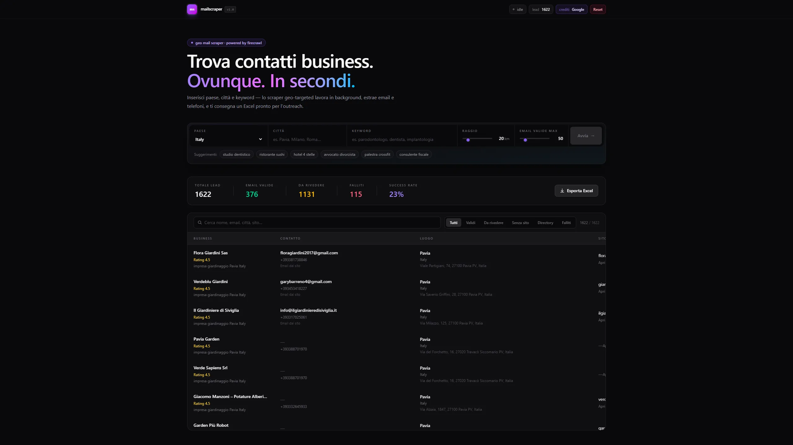
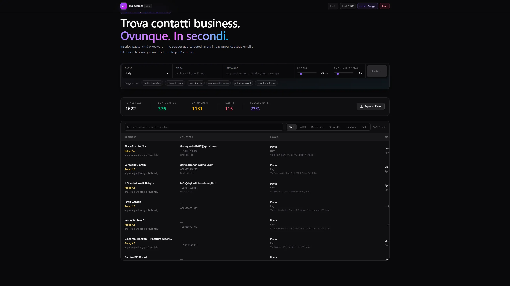

Da ricerca manuale
a lead pronti per l'outreach
Mail Scraper trasforma ricerca locale, keyword e filtri commerciali in una dashboard operativa: contatti raccolti, stato di validazione e export pronto per il team vendita.
Ambito
Lead generation
Servizio
Agente operativo
Output
Excel outreach
Focus
Dati verificabili

Schermate anonimizzate: i contatti reali sono stati mascherati per privacy.
La sfida commerciale
La ricerca lead non scala se resta copia-incolla.
Cercare aziende, aprire mappe, controllare siti, copiare email e numeri: è lavoro utile, ma fatto a mano diventa lento, incoerente e difficile da misurare.
Serviva uno strumento che non promettesse magia: doveva produrre una lista controllabile, filtrabile ed esportabile, pronta per l'outreach commerciale.
Cosa abbiamo costruito
Ricerca geo-targeted, non query generiche
Paese, città, keyword, raggio e soglia di email valide: il commerciale imposta il perimetro e l'agente lavora su quello.
Lead leggibili, filtrabili, verificabili
La lista non è un dump: separa validi, da rivedere, senza sito, directory e falliti. Il punto è decidere in fretta cosa usare.
Export pronto per l'outreach
Quando il batch è pronto, il team non deve ricostruire il dataset: esporta e passa alla fase commerciale.

Il cambiamento
Da ricerca dispersa a pipeline commerciale controllabile.
Il valore non è "scrapare tutto". Il valore è dare al team una base ordinata: cosa è valido, cosa va rivisto, cosa si può esportare e usare subito.
Città, keyword e raggio diventano parametri operativi, non appunti sparsi tra tab e fogli.
Validi, da rivedere, senza sito, directory e falliti separano il lavoro utile dal rumore.
Il dataset arriva in un formato utilizzabile dal commerciale, senza ricostruzione manuale.
Stack & approccio
Workflow di scraping geo-targeted, normalizzazione dati, stati di qualità ed export. Le schermate pubbliche indicano anche l'integrazione Firecrawl e crediti Google.
Il percorso
Perimetro
Definizione di paese, città, keyword, raggio e volume massimo.
Raccolta
Ricerca geo-targeted e recupero contatti business.
Qualità
Separazione dei lead per stato e usabilita'.
Export
File pronto per outreach e lavorazione commerciale.
Il tuo team cerca lead ancora a mano?
Costruiamo uno strumento operativo intorno al tuo processo commerciale, non intorno all'hype.